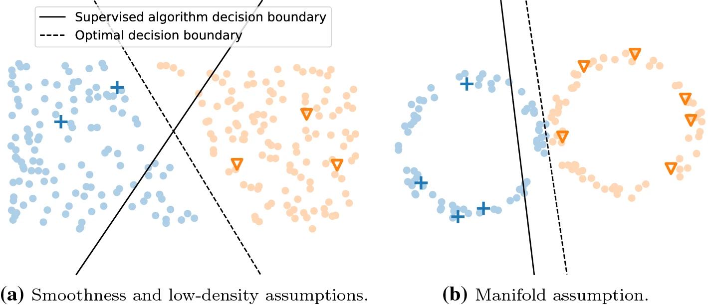
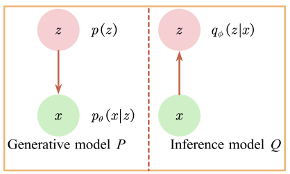
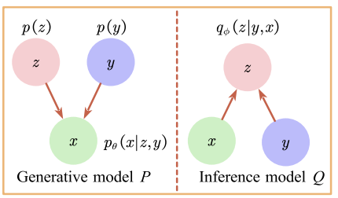

Variational Autoencoders in Semi-Supervised learning
1 Motivating Problem
The biggest hurdle an AI practitioner often faces is the lack of well labeled and annotated datasets for their specific task. The availability of a labels is the precursor to applying supervised learning techniques. This often requires a large human effort spent on annotation to make dataset usable and consumable by supervised learning models. However, by leveraging techniques like unsupervised and semi-supervised learning, practiotiners can help bring down this effort.
1.1 What is Semi-Supervised Learning?
Semi-supervised learning considers the problem of classification when only a small subset of the observations have corresponding class labels. It sits between supervised and unsupervised learning techniques. By annotating a manageable subset of data and utilizing semi-supervised learning techniques we can take advantage of the full dataset. In this article, I focus on semi-supervised classification techniques. In order to leverage these techniques, certain assumptions are made.

Smoothness Assumption
This assumption states that if two points are close together in the input space, their labels are the same.
Low Density Assumption
This assumption implies that the decision boundary should pass through a low-density area of the input-space.
Manifold Assumption
The manifold assumption in semi-supervised learning states that
- the input space is composed of multiple lower-dimensional manifolds on which all data points lie and
- data points lying on the same manifold have the same label.
A manifold here refers to a lower dimensional representation of the input shapes. By learning informative manifolds, we can learn the labels of different data points.
2 Variational Autoencoders(VAE)
In the previous section, we spoke about some of the assumptions that we make when applying semi-supervised learning techniques. The manifold assumption is of particular interest here as by learning an informative lower dimensional representation of the input space, we can create supervised models by leveraing some or no labels. This is where a deep generative models like VAE and GAN(Generative Adversarial networks) can be utilized.
Generative models allow us to learn and approximate any kind of data distribution by just using the input data in an unsupervised way. Deep Generative models leverage neural network architectures to learn complex representation from high dimensional data like images, audio etc. In this exploration, we focus on Variational Autoencoders.
2.1 How it works?
Variational Autoencoders(Diederik P. Kingma and Welling 2014) are based on Autoencoders. Autoencoders are neural networks that attempt to predict their own inputs. It’s a self-supervised learning technique as labels are the input itself. It compresses the original feature space automatically by learning from examples. The network is divided into two components, an Encoder, which compresses the feature space and a Decoder which de-compresses the encoded feature space. The objective is to minimize the reconstruction loss. While it can’t be generalized beyond the data it is trained on, it has applications such as dimensionality reduction and de-noising.

Autoencoders learn a one-to-one representation of the data and this is the reason why they don’t generalize well and can’t generate new observations. VAEs extend the capability of autoencoders by learning a model which can generate complex data distributions from very simple latent variable distributions.
2.2 The Math
Given the graphical representation in Figure 1, let us define the joint distribution \(p(x,z) = p(z)p(x|z)\). \(p(z)\) is the prior distribution of the latent variable. We have the Encoder which approximates the true posterior \(p(z|x)\) with \(q(z|x)\) and the Decoder which parametrizes the likelihood \(p(x|z)\).
\[\begin{align*} p(x,z) &= p(z)p(x|z) \\ p(z) &= \mathcal{N}(z|\mathbf{0},I)\\ p_{\theta}(x|z) &= f(x;z,\theta) \end{align*}\]
The function \(f(x;z,\theta)\) is suitable likelihood function parametrized by a non-linear transformation of the latent variables. The parameters we learn here are \(\mu\) and \(\sigma\) of the latent variable as a function of the encoder weights and input samples.
\[q_{\phi}(z|x) = \mathcal{N}(z|\mu_{\phi}(x), \sigma^2_{\phi}(x))\]
\(\theta\) and \(\phi\) are neural network parameters which are not included in the bayesian analysis. The goal is to find good values of \(\theta\) and \(\phi\) such that \(q_{\phi}(z|x)\) provides a good approximation of the true posterior and such that log probability of the observed value \(log(p(x))\) is maximized. Hence, the ELBO of the model is the lower bound on \(log(p(x))\). This is given by
\[\begin{equation} \label{eq1} ELBO(x) \equiv \int dz\ q(z|x)log\ p(x|z) + \int dz\ q(z|x)log\frac{q(z|x)}{p(z)} \end{equation}\]
The first term here is the reconstruction loss which captures the likelihood of getting the original observation \(x\) back after we encode it to \(z\) and decode it. The second term is the KL Divergence term. Kullback-Leibler divergence is a particular (non-negative) measure of ‘closeness’ between two distributions. In this case the two distributions are \(p(z)\) and the encoder \(q(z|x)\). If the encoder is generating samples of \(z\) that are too unlikely given the prior, it is penalized. The encoder will learn a distribution where it differs from the prior when the cost of doing so is outweighed by the advantage of the reconstruction term.
2.3 Beta-VAE(\(\beta\)-VAE)
\(\beta\)-VAE(Higgins et al. 2017) is an extension of VAE where a regularization coefficient \(\beta\) is applied to the KL-Divergence term in the variational objective equation. Varying \(\beta\) changes the degree of applied pressure on the latent variable. \(\beta=1\) corresponds to the VAE equation described above. Setting \(\beta>1\) should help \(z\) learn a more efficient representation of \(x\) by putting tighter constraints on it. In the tensorflow-probability implementation, this weight is baked into the Kullback-Leibler regularization loss and can be set as a variable.
2.4 Implementation
I’ve explored two deep learning probabilistic programming languages - Tensorflow Probability(TFP)(Fischer, Alemi, and Dillon n.d.) and Pyro(Tutorials-Pyro n.d.b). TFP provides ease of implementation and similarity to the structure of a vanilla neural network, an advantage inherent to Keras. However, Pyro in my opinion offers a way to define more complex models with branches, which is an advantage native to PyTorch as well. I’ll explore both for the VAE and use the language which offers the most comfort in implementation for the different variations of VAE.
2.5 Results
3 Semi-supervised VAE(SS-VAE)
So far we’ve ignored labels in the training of VAE. However, the methods proposed by (Durk P. Kingma et al. 2014), allow us to create supervised learning models based on the VAE. They propose three variations in the paper to leverage VAEs(Tutorials-Pyro n.d.a).
3.1 Latent feature discriminative model - M1
In the section above, we have demonstrated that the latent variable \(z\) learns an informative representation of the input space which is well separated. By using samples from posterior \(p(z|x)\) as features, we train a classifier. We can use models like k-Nearest Neighbors classifier or SVM to train models even in cases where the number of labeled samples is limited given that we have seen that the latent space meets the various assumptions of semi-supervised learning.
3.2 Generative semi-supervised model - M2
This variation on the standard VAE models the data as being generated both by the label \(y\) and the latent variable \(z\). The model is described as follows-
\[\begin{align*} p(y) &= Cat(y|\pi) \\ p(z) &= \mathcal{N}(z|\mathbf{0},I)\\ p_{\theta}(x|y,z) &= f(x;y,z,\theta) \end{align*}\]
\(Cat(y|\pi)\) is a multinomial distribution. The difference to the VAE is that we consider \(y\) as a latent variable in addition to \(z\). The distribution \(q_{\phi}(y|x)=Cat(y|\pi_{\phi}(x))\) for the missing labels behaves as a classifier.
The distribution \(q_{\phi}(z|x,y)=\mathcal{N}(z|\mu_{\phi}(x,y), \sigma^2_{\phi}(x,y)\)) corresponds to the encoder.

3.2.1 Defining the ELBO
3.3 Stacked generative semi-supervised model - M1+M2
4 Infinite VAE
(Ehsan Abbasnejad, Dick, and Hengel 2017)